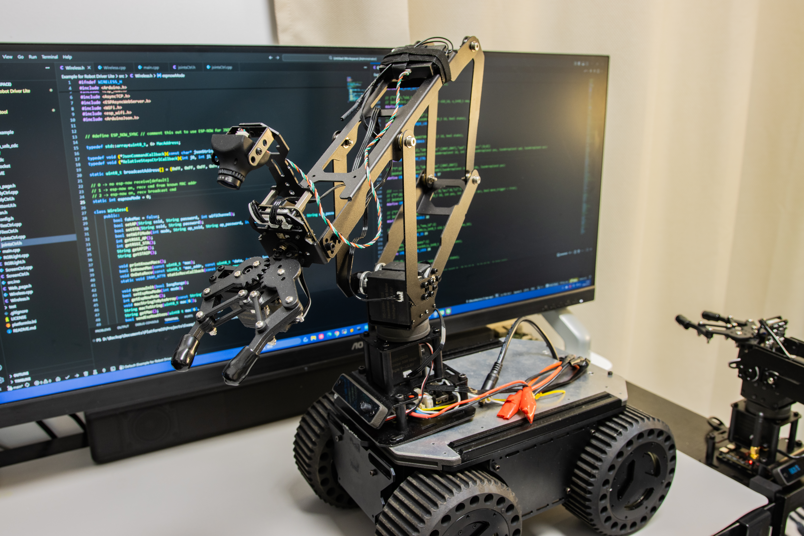
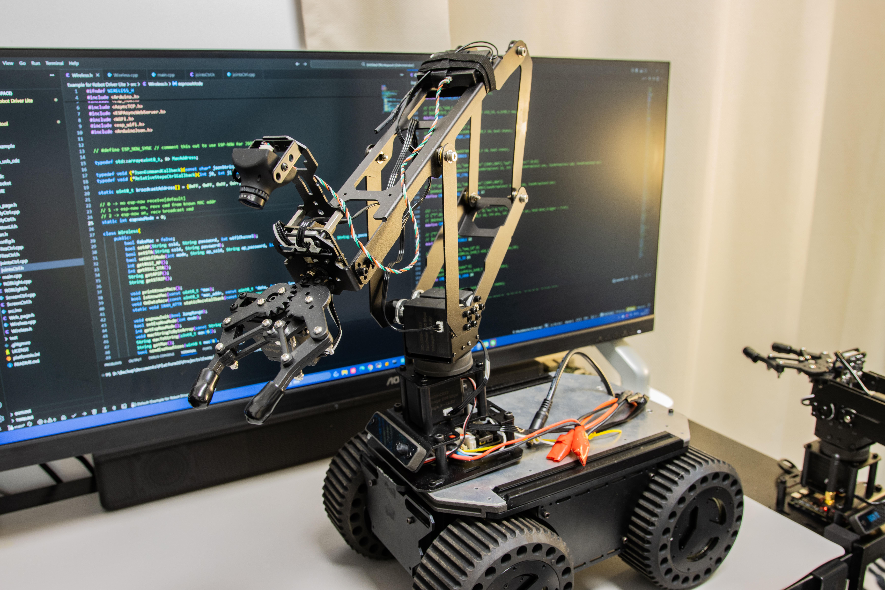
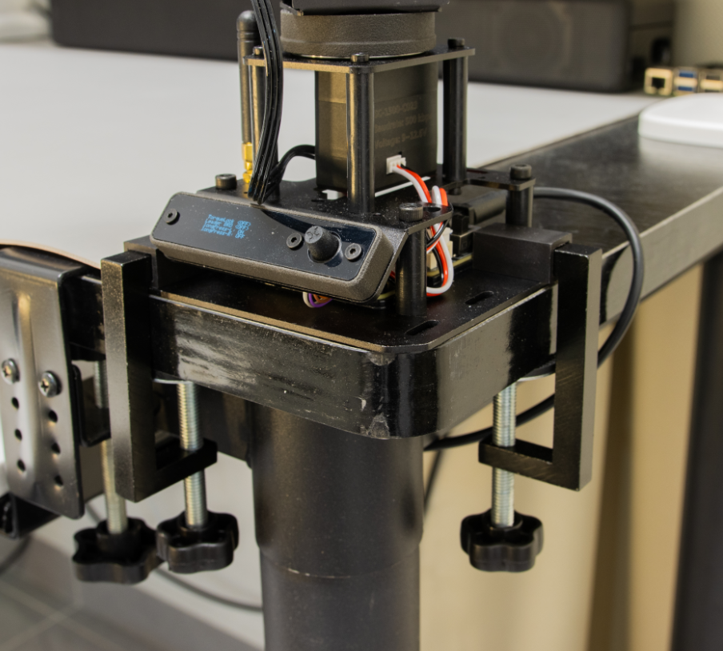
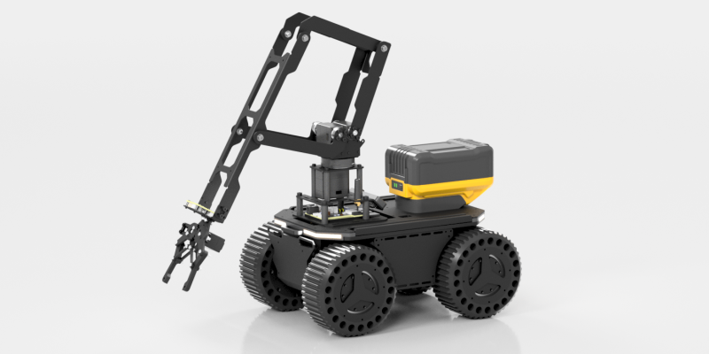
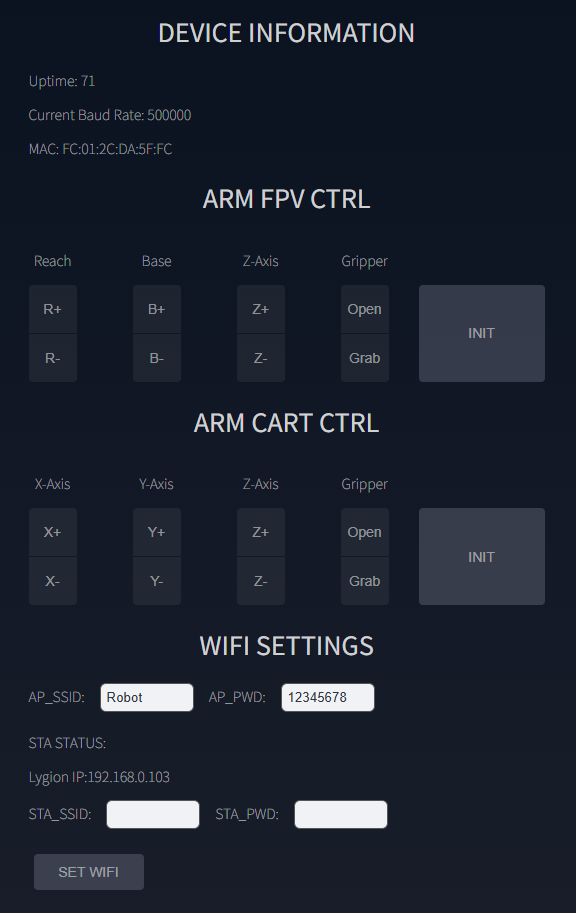
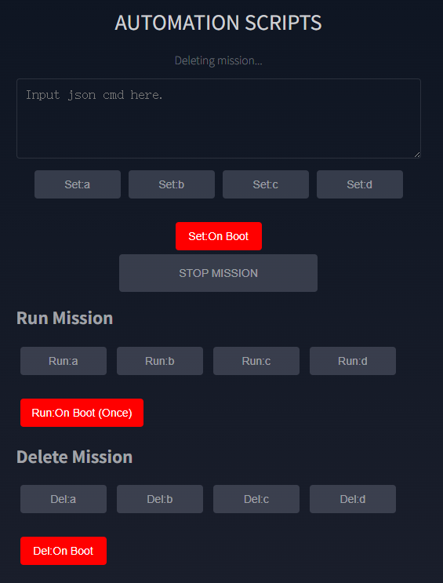
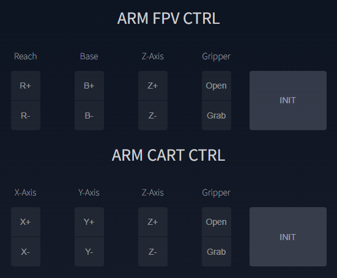
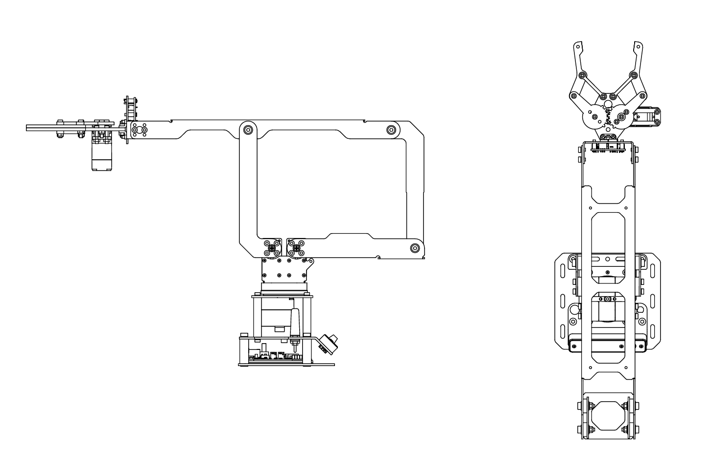
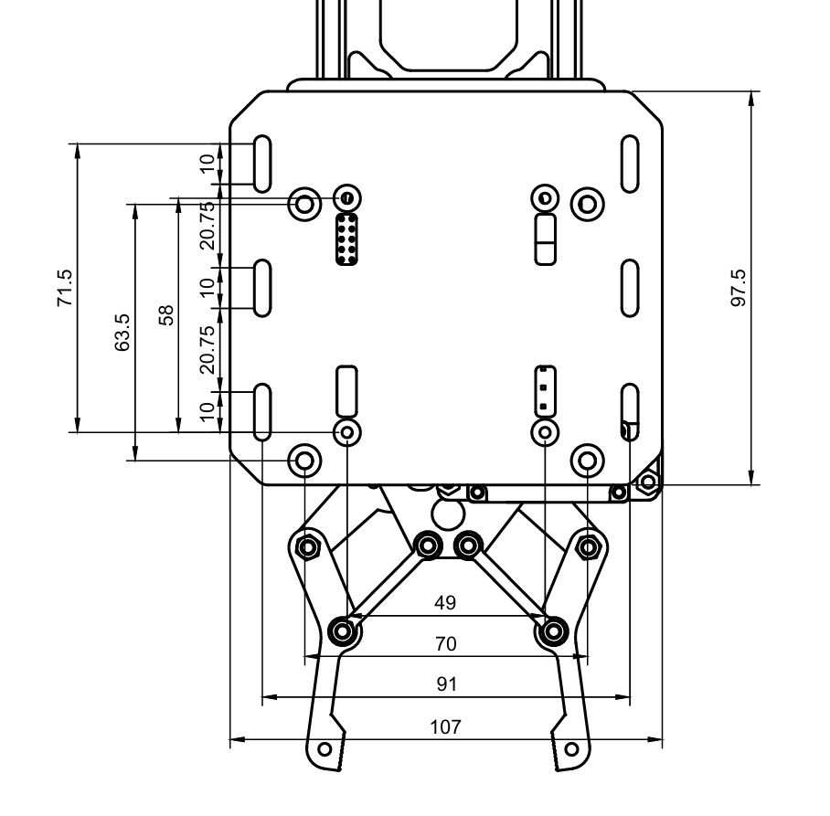
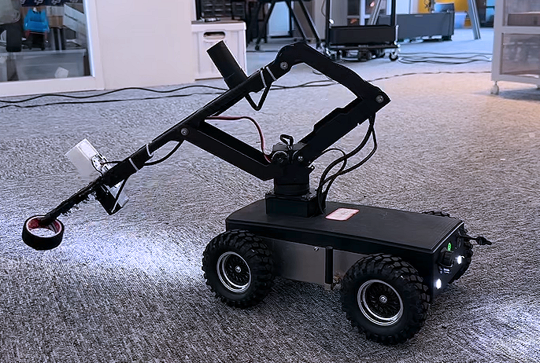

Browser-controlled robotic arm
LinkArm-LT
轻量机械臂与 Web 控制平台
内置 ESP32-S3 控制器和 Web 应用，开机后可直接通过浏览器完成基础控制、Wi-Fi 配置、动作脚本编排和 JSON 指令调试。页面只整理当前资料包、现有详情素材和本地 Wiki 中能直接确认的信息，不补写未明确给出的参数。
使用前必须固定：现有文档明确要求使用两只 G 字夹固定到桌面，或通过安装板牢固固定到底盘与实验平台。USB 只适合通信与开发调试，不能替代机械臂的 9~12.6V 动力电源。




Core capabilities
把网页控制、动作编排和对外通信都收进同一台机械臂
LinkArm-LT 的亮点不只是机械结构，而是把浏览器控制台、脚本系统、无线接入和 JSON 通信能力整合在控制器中。对需要快速演示、教学使用或继续接到上位机项目的人来说，现有资料已经给出了完整的入门和集成路径。
浏览器直连，不依赖专用 App
默认热点名为 Robot，密码 12345678，浏览器访问 http://192.168.4.1 即可进入控制台，适合手机、平板和电脑直接使用。
两套末端控制方式
Web 控制台同时提供 FPV 控制和三维直角坐标控制。笛卡尔坐标与移动距离统一使用毫米，便于人工操作与程序联动。
动作脚本可保存到板载 Flash
AUTOMATION SCRIPTS 可把多条 JSON 指令保存为 .mission 文件，掉电后仍会保留，并支持手动运行、删除和开机自动执行。
支持 ESP-NOW 同步示教
一台 LinkArm-LT 可作为示教主机，把姿态实时广播给一台或多台从机，不依赖路由器，适合多机械臂同步演示与教学。
开放上位机接入
同一套 JSON 指令可通过 USB CDC、HTTP 和 WebSocket 下发。资料中已给出 Python 示例、串口测试方法和接口地址。
集成资料已带图纸与固件说明
本地资料包含原始 PDF、DXF、固件恢复说明和中位校准流程，适合先做空间评估，再进入安装设计和项目集成。

Web console
开机即有控制台，热点直连和局域网接入都已预留
出厂固件默认支持 AP 热点模式，也支持在控制台里填入路由器账号密码后切换到 STA 局域网模式。资料还明确说明 AP 与 STA 可以同时工作，便于首次调试和现场维护。
- 默认热点：
Robot/12345678。 - 默认入口：AP 模式浏览器访问
http://192.168.4.1。 - 设备信息：页面会显示运行时间、当前总线波特率和设备 MAC。
- FPV 控制：
R/B/Z与夹爪按键适合快速示教与现场操作。 - 直角坐标控制：
X/Y/Z均为逆运动学控制，适合程序化路径测试。
切换提醒：资料明确提示 FPV 和直角坐标控制内部维护的目标状态不同。连续操作时尽量使用同一组控件，切换前先点
INIT 更稳妥。
Automation scripts
任务文件直接保存在控制器里，可循环、可开机自动运行
资料中的动作脚本系统不是简单的录制回放，而是可以按行保存 JSON 指令，形成可编辑、可复用的任务文件。适合把搬运、演示或教学动作写成固定流程。
boot_user.mission。
现有说明建议先在 JSON INTERFACE 逐条验证动作，再保存为任务文件，不要第一次就直接写成开机运行。

常见用法
- 把多步末端路径写成固定演示流程。
- 通过延时指令安排停顿、等待与节拍。
- 保存开机任务前先做低速全路径测试。
Host communication
从演示到开发，可以按布线和实时性选择不同通信方式
LinkArm-LT 的上位机接入没有被锁死在单一协议里。当前文档把常用方式拆成 USB CDC、HTTP 和 WebSocket 三条链路，并给出各自典型频率和适用场景。
- USB CDC：约 60~65 条/秒，适合固定工位、单板电脑和低延迟调试。
- HTTP：约 40 条/秒，接口简单，适合任务下发与普通控制。
- WebSocket：60 条/秒以上，适合需要长连接和状态反馈的实时控制。
- 统一 JSON：三种方式使用同一套 JSON 指令，脚本和上位机逻辑更容易复用。

当前资料还明确给出 Python、串口终端与 WebSocket 示例，适合把机械臂继续接入 PC、树莓派、Jetson 或自定义控制程序。
Integration and dimensions
桌面固定、底盘集成和安装评估资料已经成套给出
现有资料把集成重点放在三件事上：固定方式、电源边界和安装孔位。页面保留了这些已确认内容，并避免把示意图误当成加工图。
固定方式
标准套装提供两只 G 字夹，适用于厚度约 7~50mm 的桌边；集成到底盘时应通过安装板和螺栓固定。
电源边界
动力输入为 DC 9~12.6V，推荐 12V 3A 适配器或满足电流需求的 3S 锂电池。USB 不作为机械臂动力电源。
原始图纸
资料包中已包含展开姿态 PDF、折叠姿态 PDF 和二维 DXF，可用于安装设计、空间评估和正式加工前复核。



Application scenarios
更适合演示、教学、轻量搬运和移动机器人上层集成
结合现有图文资料，LinkArm-LT 的典型场景主要是桌面示教、移动底盘搭载、脚本化动作演示以及通过网络或 USB 进行二次开发。页面不把它包装成高负载工业机械臂，而是保持与资料一致的轻量平台定位。
- 桌面教学演示：浏览器控制和脚本系统降低了现场展示门槛。
- 移动机器人搭载：资料已展示机械臂与底盘结合的应用画面。
- 轻量自动化流程：通过任务文件可重复执行固定动作。
- 上位机实验平台：统一 JSON 指令适合做视觉、AI Agent 或流程控制联调。
Specifications
当前资料可直接确认的参数与接入信息
| 产品型号 | LinkArm-LT |
|---|---|
| 产品类型 | 轻量机械臂，内置 ESP32-S3 控制器与 Web 控制台 |
| 工作电压 | DC 9~12.6V |
| 推荐电源 | 12V 3A，DC5521 |
| 移动供电 | 满足功率要求的 3S 锂电池 |
| 总线波特率 | 500000 bps |
| 默认 Wi-Fi 热点 | Robot |
| 默认热点密码 | 12345678 |
| AP 模式地址 | http://192.168.4.1 |
| HTTP 服务 | 端口 80，接口 /api/cmd |
| WebSocket 服务 | ws://<设备IP>:80/ws |
| 上位机通信 | USB CDC / HTTP / WebSocket |
| 末端控制方式 | FPV 控制与三维直角坐标控制 |
| 动作脚本 | .mission 任务文件，支持保存、运行、删除与开机自动执行 |
| 同步示教 | ESP-NOW 一对一或一对多 |
| 总线设备构成 | 4 个舵机 + 1 个 TTL Node (A) |
| 图纸资料 | 展开姿态 PDF、折叠姿态 PDF、二维 DXF |
Next step
先完成固定与上电检查，再决定是浏览器直控还是接入上位机
如果目标是快速演示，直接连接默认热点进入 Web 控制台即可。如果目标是集成到自己的程序或移动平台，建议先用图纸做安装评估，再按 USB、HTTP 或 WebSocket 其中一种路径开始联调。Wiki 链接先保留占位，等待后续补充正式地址。